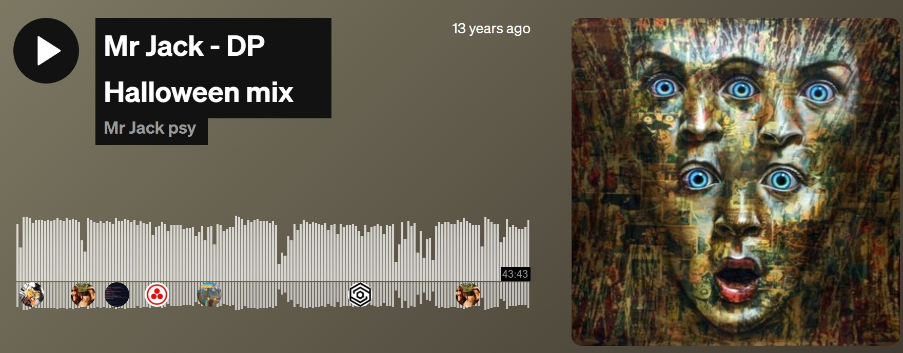

Exhibitions
The Adam and Ron Show, Elms Lesters Painting Rooms, London, United Kingdom, May 3–30, 2008.
Literature
Ron English, Death and the Eternal Forever (London: Korero Press, 2014), p. 116. ISBN 978-0957664920.
Ron English, Status Factory: The Art of Ron English (San Francisco: Last Gasp of San Francisco, 2014), p. 34. ISBN 978-0867197891.
Notes
This work appears in the exhibition catalogue / book The Adam and Ron Show (Elms Lesters Painting Rooms, 2008), which supports its inclusion in the London exhibition.
This composition was later adapted by the artist as a limited-edition print in the Vinyl Chord: A Revolutionary Record Store series.
The image was also used as cover artwork for the SoundCloud track Mr Jack - DP Halloween mix.
Ancillary Documentation

